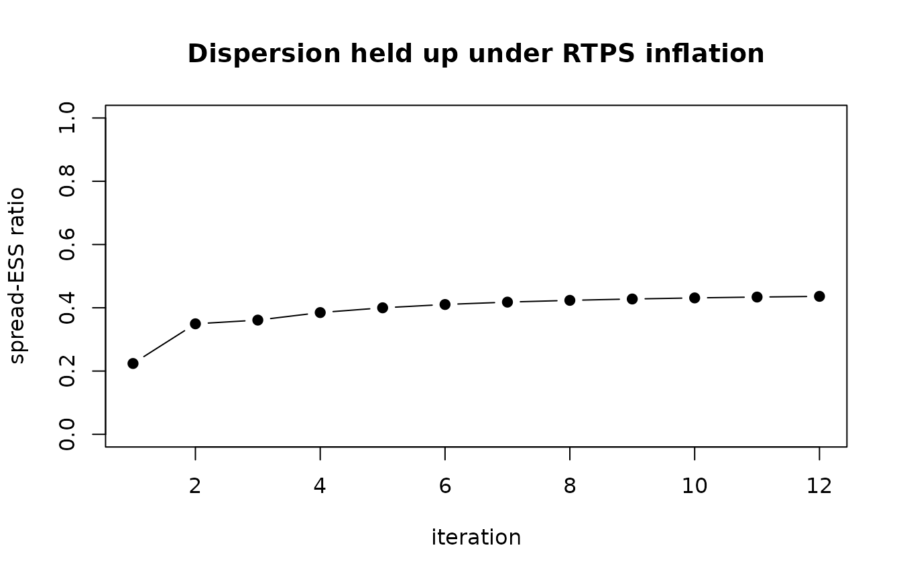

Countering Ensemble Collapse: Inflation and Localisation
Source:vignettes/inflation-localisation.Rmd
inflation-localisation.RmdThe problem: finite-ensemble under-dispersion
An iterative ensemble smoother estimates a posterior parameter distribution from a finite ensemble of realisations. With a finite ensemble two pathologies arise, both of which make the posterior spread too narrow – the ensemble becomes over-confident:
- Under-dispersion (ensemble collapse). Each assimilation step contracts the ensemble spread; over several iterations the posterior variance can fall far below the true posterior variance. The smoother then reports far more certainty than the data support.
- Spurious correlations. A finite ensemble manufactures apparent correlations between parameters and observations that are not real. Acting on them injects noise into the update and accelerates collapse.
PESTO addresses the first with covariance inflation
(pesto_inflation())
and the second with covariance localisation (pesto_localisation()).
Both are opt-in: the default NULL leaves the update
identical to the bare smoother.
This vignette demonstrates the effect on a linear-Gaussian problem, where the analytic posterior is known and the collapse can be measured exactly.
A linear-Gaussian problem with a known posterior
For a linear forward model with a Gaussian prior and observation error , the posterior covariance is . We can therefore compare the ensemble’s posterior spread directly against the truth.
library(PESTO)
set.seed(42L)
npar <- 6L
nobs <- 10L
nreal <- 24L # a deliberately small ensemble, to provoke collapse
G <- matrix(rnorm(nobs * npar), nobs, npar)
theta_true <- rnorm(npar)
obs_sd <- 0.3
y <- as.numeric(G %*% theta_true) + rnorm(nobs, sd = obs_sd)
# Analytic posterior standard deviation (standard-normal prior).
post_cov <- solve(diag(npar) + crossprod(G) / obs_sd^2)
post_sd <- sqrt(diag(post_cov))
forward <- function(theta) theta %*% t(G)
prior <- matrix(rnorm(nreal * npar), nreal, npar,
dimnames = list(NULL, paste0("p", seq_len(npar))))A small helper runs the smoother and returns the realised posterior spread alongside the spread-ESS collapse diagnostic recorded on the final iteration.
run_ies <- function(inflation = NULL, localisation = NULL) {
fit <- pesto_ies_callback(
forward_model = forward,
prior_ensemble = prior,
obs = setNames(y, paste0("o", seq_len(nobs))),
obs_sd = obs_sd,
noptmax = 12L,
inflation = inflation,
localisation = localisation,
verbose = FALSE
)
par_post <- as.matrix(fit$par_ensemble[, -1])
last_diag <- fit$iterations[[length(fit$iterations)]]
list(
sd_ratio = mean(apply(par_post, 2L, sd) / post_sd),
ess_ratio = last_diag$spread_ess_ratio
)
}The bare smoother collapses
bare <- run_ies()
round(bare$sd_ratio, 3)
#> [1] 0.222The mean posterior standard deviation is only a fraction of the analytic value – the ensemble is badly over-confident. The spread-ESS ratio quantifies the same collapse from the eigenspectrum of the parameter anomaly covariance (1 means variance is spread isotropically across all directions; small values mean it has collapsed onto a few):
round(bare$ess_ratio, 3)
#> [1] 0.315Inflation re-expands the spread
pesto_inflation() offers four methods. The workhorse is
relaxation to prior spread ("rtps", Whitaker & Hamill
2012): each parameter’s posterior anomalies are rescaled toward the
pre-update spread, so the directions that collapsed hardest are
re-inflated most. The "adaptive" method instead targets a
global spread-retention floor.
rtps <- run_ies(inflation = pesto_inflation("rtps", alpha = 0.6))
adaptive <- run_ies(inflation = pesto_inflation("adaptive",
retention_floor = 0.7))
data.frame(
method = c("none", "rtps", "adaptive"),
sd_ratio = round(c(bare$sd_ratio, rtps$sd_ratio, adaptive$sd_ratio), 3),
spread_ess = round(c(bare$ess_ratio, rtps$ess_ratio, adaptive$ess_ratio), 3)
)
#> method sd_ratio spread_ess
#> 1 none 0.222 0.315
#> 2 rtps 0.507 0.436
#> 3 adaptive 0.310 0.459RTPS roughly doubles the retained posterior spread and lifts the spread-ESS ratio. A caveat worth stating plainly: inflation mitigates collapse, it does not abolish it. A finite-ensemble GLM smoother of this size still under-estimates the posterior spread; inflation moves it substantially closer to the truth without claiming to reach it. Larger ensembles narrow the residual gap.
The spread-ESS diagnostic (ensemble_spread_ess())
is recorded on every iteration regardless of method, so
the collapse trajectory is always available in the result:
fit <- pesto_ies_callback(
forward, prior, setNames(y, paste0("o", seq_len(nobs))),
obs_sd = obs_sd, noptmax = 12L,
inflation = pesto_inflation("rtps", alpha = 0.6), verbose = FALSE
)
plot(
vapply(fit$iterations, function(d) d$spread_ess_ratio, numeric(1L)),
type = "b", pch = 19, xlab = "iteration", ylab = "spread-ESS ratio",
main = "Dispersion held up under RTPS inflation", ylim = c(0, 1)
)
Localisation suppresses spurious correlations
For parameter-estimation problems whose parameters carry no spatial coordinate, the recommended localiser is the correlation-based automatic method (Luo & Bhakta 2020). It needs no metric: it estimates a noise floor from the ensemble itself and damps sample correlations that fall below it.
loc <- run_ies(localisation = pesto_localisation("correlation",
taper = "soft"))
round(loc$sd_ratio, 3)
#> [1] 0.737The two countermeasures compose – inflation restores variance magnitude, localisation removes the spurious updates that drain it:
both <- run_ies(
inflation = pesto_inflation("rtps", alpha = 0.6),
localisation = pesto_localisation("correlation", taper = "soft")
)
round(both$sd_ratio, 3)
#> [1] 2.663When a genuine distance metric does exist, the classical
Gaspari-Cohn taper is available via
pesto_localisation("distance", ...), supplying either a
precomputed distances matrix or par_coords /
obs_coords together with a localisation
radius.
References
Gaspari, G. & Cohn, S. E. (1999). Construction of correlation functions in two and three dimensions. Quarterly Journal of the Royal Meteorological Society, 125(554), 723–757.
Luo, X. & Bhakta, T. (2020). Automatic and adaptive localization for ensemble-based history matching. Journal of Petroleum Science and Engineering, 184, 106559.
Whitaker, J. S. & Hamill, T. M. (2012). Evaluating methods to account for system errors in ensemble data assimilation. Monthly Weather Review, 140(9), 3078–3089.
Session information
sessionInfo()
#> R version 4.6.0 (2026-04-24)
#> Platform: x86_64-pc-linux-gnu
#> Running under: Ubuntu 24.04.4 LTS
#>
#> Matrix products: default
#> BLAS: /usr/lib/x86_64-linux-gnu/openblas-pthread/libblas.so.3
#> LAPACK: /usr/lib/x86_64-linux-gnu/openblas-pthread/libopenblasp-r0.3.26.so; LAPACK version 3.12.0
#>
#> locale:
#> [1] LC_CTYPE=C.UTF-8 LC_NUMERIC=C LC_TIME=C.UTF-8
#> [4] LC_COLLATE=C.UTF-8 LC_MONETARY=C.UTF-8 LC_MESSAGES=C.UTF-8
#> [7] LC_PAPER=C.UTF-8 LC_NAME=C LC_ADDRESS=C
#> [10] LC_TELEPHONE=C LC_MEASUREMENT=C.UTF-8 LC_IDENTIFICATION=C
#>
#> time zone: UTC
#> tzcode source: system (glibc)
#>
#> attached base packages:
#> [1] stats graphics grDevices utils datasets methods base
#>
#> other attached packages:
#> [1] PESTO_0.6.0
#>
#> loaded via a namespace (and not attached):
#> [1] vctrs_0.7.3 cli_3.6.6 knitr_1.51 rlang_1.2.0
#> [5] xfun_0.58 S7_0.2.2 textshaping_1.0.5 jsonlite_2.0.0
#> [9] data.table_1.18.4 glue_1.8.1 htmltools_0.5.9 ragg_1.5.2
#> [13] sass_0.4.10 scales_1.4.0 rmarkdown_2.31 grid_4.6.0
#> [17] evaluate_1.0.5 jquerylib_0.1.4 fastmap_1.2.0 yaml_2.3.12
#> [21] lifecycle_1.0.5 compiler_4.6.0 RColorBrewer_1.1-3 fs_2.1.0
#> [25] Rcpp_1.1.1-1.1 farver_2.1.2 systemfonts_1.3.2 digest_0.6.39
#> [29] R6_2.6.1 bslib_0.11.0 tools_4.6.0 gtable_0.3.6
#> [33] pkgdown_2.2.0 ggplot2_4.0.3 cachem_1.1.0 desc_1.4.3